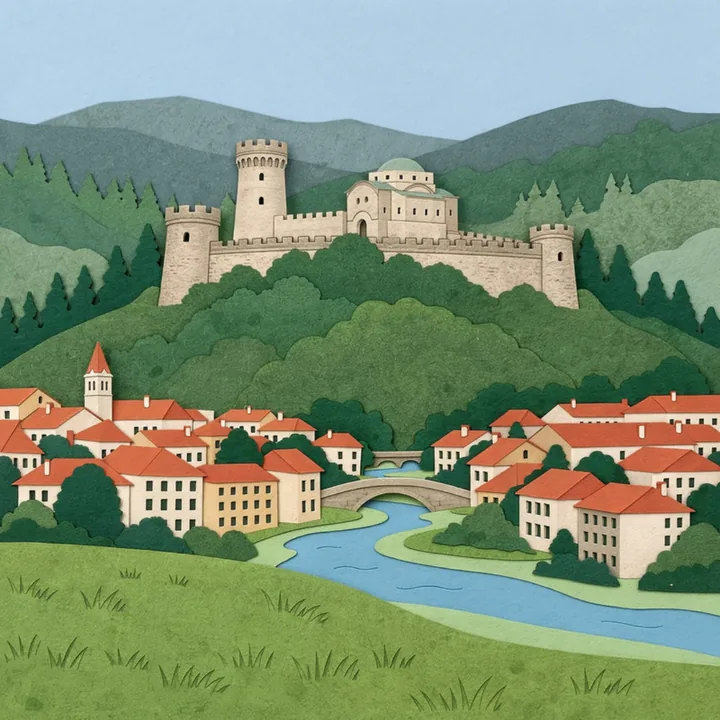

- Муниципалитетов
- 6
- Жителей (перепись 2024)
- 155 282
- Города нагорья
- 1 700–1 940 м
- Вершина Диди-Абули
- 3 300 м
- Порог горной болезни (NHS)
- 2 500 м
- Экстренный номер
- 112
Проверено 23 ноября 2026 года.
Где находится Самцхе-Джавахети и из чего состоит край
Это административный регион на юге страны из двух исторических провинций — Самцхе и Джавахети, — так его описывает Национальная администрация туризма. В нём горные курорты, пещерный город и высокогорье с крупными водоёмами.
![Схема «Две дороги из столицы в край», не в масштабе: Западное шоссе через Гори и Хашури — к Боржоми; Южное шоссе мимо озера Паравани — к Ниноцминде, Ахалкалаки, Вардзии и Ахалцихе; звёздочка: до Ахалцихе страница города ведёт через Боржомское ущелье; шесть муниципалитетов — Адигенский, Аспиндзский, Ахалцихский, Ахалкалакский, Боржомский, Ниноцминдский; 207 км до Ахалцихе и 278 км до Ахалкалаки по Грузинской энциклопедии; внизу: georgia.travel, Грузинская энциклопедия, региональная Лесная служба, проверено 23.11.2026](../../assets/img/samtskhe-ru/samtshe-dzhavaheti-karta-mob.webp)
Муниципалитетов шесть: Адигенский, Аспиндзский, Ахалцихский, Ахалкалакский, Боржомский и Ниноцминдский. Такой состав называет региональная Лесная служба — это зона её работы.
По переписи 14 ноября 2024 года в крае 58 370 городских и 96 912 сельских жителей, горожан — 38 %. Всего 155 282 человека. Это наше сложение: итога по региону одной цифрой в публикации Geostat нет.
Что посмотреть в Самцхе-Джавахети: главные достопримечательности
Главные места — пещерный город Вардзия, три курорта, высокогорные водоёмы и нацпарк, а ещё город с отреставрированным комплексом и музеем.
Вардзия
Пещерный комплекс лежит на высоте от 1 300 до 1 462 м. Это ниже порога горной болезни в 2 500 м по NHS — наш вывод, о крае NHS не пишет. О пещерах, дороге и помощи рядом — пещерный город, камнепады и где врач рядом.
Боржоми и нацпарк Боржоми-Харагаули
Рядом с курортом — национальный парк площадью 104 099 га. Агентство охраняемых территорий называет его первым национальным парком независимой страны: он создан в 1995 году.
По данным Агентства охраняемых территорий, Зелёный монастырь (Мцване) стоит в 8 км от курорта, в селе Читахеви; Агентство относит его к объектам вокруг парка, а не к самому парку. Что ещё есть в парке и где регистрация — парк, источники и вода курорта и тропы и регистрация в национальном парке.
Бакуриани
Горнолыжный курорт стоит на высоте 1 700 м, в 180 км от столицы; пик сезона — с декабря по март. Трассы, высота и что делать при травме — горнолыжный курорт и помощь при травме.
Абастумани
Курорт лежит на высоте 1 300–1 340 м. У администрации туризма две цифры: 1 340 м на странице о крае и 1 300 м на странице самого курорта. Что там смотреть и где помощь — обсерватория, дорога и больница рядом.
Ахалцихе и крепость Рабат
Ахалцихе — город на юге страны и центр одноимённого муниципалитета, в 207 км от столицы, на высоте около 1 000 м. Так пишет Грузинская энциклопедия — справочное издание. Население города в ней — 17,9 тыс. человек, но это данные 2014 года.

Крепость стоит в самом городе; её история, по сайту администрации комплекса, начинается с IX века. С XIII века она становится владением князей Джакели, а в 2011–2012 годах её полностью отреставрировали. Внутри — исторический музей края, церковь, мечеть и медресе.
Площадь комплекса два сайта называют разную: 7 га у администрации туризма и 10 га на сайте комплекса.
Джавахети: нагорье, озёра и национальный парк
Джавахетское нагорье администрация туризма называет одним из самых холодных и пустынных обитаемых районов страны (перевод наш). В этих местах лежат несколько крупнейших водоёмов из таблицы Geostat.

Озеро Паравани: 2 073 м и лёд с декабря
У него наибольшая площадь в таблице крупнейших водоёмов Geostat — 37,5 км²; высота — 2 073 м, наибольшая глубина — 3,3 м. Из-за холодного климата лёд встаёт с декабря и держится всю зиму.
Другие высокогорные озёра
Озеро Табацкури лежит на высоте 1 997 м по Geostat; у администрации туризма цифра округлена — около 2 000 м. Его площадь — 14,2 км², глубина — до 40,2 м.
Высоты других водоёмов по Geostat: Карцахи — 1 799 м, Ханчали — 1 928 м, Сагамо — 1 996 м, Мадатапа — 2 108 м.
Джавахетский национальный парк
Парк лежит в Ахалкалакском и Ниноцминдском муниципалитетах; там же стоит гора Диди-Абули высотой 3 300 м.
По данным Агентства охраняемых территорий, в парке встречается 140 видов гнездящихся и пролётных птиц. В визит-центре можно взять напрокат снегоступы. Перед походом прочитайте правила национальных парков.
Ахалкалаки и Ниноцминда: города на 1 700–1 940 м
Первый из двух городов, по Грузинской энциклопедии, стоит на высоте 1 710 м. У других источников цифры расходятся, поэтому в заголовке и сводке мы округляем до 1 700 м. До столицы — 278 км.
Среднегодовая температура здесь +4,9 °C. Январь в среднем −7,3 °C, август +16 °C. Энциклопедия — справочное издание, не метеослужба.
Второй город администрация туризма называет многонациональным. Он стоит на высоте 1 940 м, зима здесь холодная и малоснежная, дорога от столицы занимает 3 ч 10 мин.
Опасна ли высота нагорья для здоровья
По NHS, горная болезнь обычно начинается выше 2 500 м. Здешние города стоят на высоте 1 700–1 940 м, самый большой по площади водоём — на 2 073 м: всё это ниже порога. Это наш вывод: NHS и CDC о крае не пишут.
Но порог — не гарантия. По TravelHealthPro, на 1 500–2 500 м горная болезнь бывает редко, а при подъёме на 2 000–3 000 м её получают 9–25 % неакклиматизированных людей. Вершина Диди-Абули (3 300 м) — уже выше порога.
CDC советует не подниматься за один день с низкой высоты выше 2 750 м. Людям с болезнями сердца или лёгких там же советуют обсудить поездку с врачом, знакомым с высокогорной медициной.
Наш совет: при болезнях сердца, лёгких и давлении спросите врача до поездки в край. На вершину не поднимайтесь в день приезда. Признаки и первая помощь — горная болезнь: признаки и что делать; как это выглядит на лыжном курорте — высота курорта и здоровье.
![Инфографика «Какая высота в крае», горизонтальные полосы: Ахалцихе около 1 000 м (энциклопедия), Вардзия 1 300–1 462 м, Абастумани 1 300–1 340 м, Бакуриани 1 700 м, Ахалкалаки около 1 700 м, Карцахи 1 799 м, Ханчали 1 928 м, Ниноцминда 1 940 м, Сагамо 1 996 м, Табацкури 1 997 м (Geostat), Паравани 2 073 м, Мадатапа 2 108 м, Диди-Абули 3 300 м; линии «2 500 м — порог горной болезни (NHS)» и «2 750 м — не выше за один день (CDC)»; внизу: georgia.travel, Geostat, энциклопедия, NHS, CDC; вывод о крае — наш](../../assets/img/samtskhe-ru/samtshe-dzhavaheti-vysota-mob.webp)
Насколько холодно на нагорье зимой
«Джавахетское нагорье — самое холодное место Грузии зимой», — пишет Агентство охраняемых территорий (перевод наш). Администрация туризма формулирует мягче: один из самых холодных обитаемых районов страны.
Озёра здесь на зиму замерзают. На самом большом по площади водоёме лёд встаёт с декабря, его толщина — 47–73 см. В здешнем городе на высоте 1 710 м январь в среднем −7,3 °C, по Грузинской энциклопедии.
Холод опасен переохлаждением. Переохлаждение, по определению NHS, — опасное снижение температуры тела ниже 35 °C. Признаки — дрожь, бледная и холодная кожа, невнятная речь, усталость или спутанность сознания. Заметили такие признаки — звоните 112: это наш совет.
Наш совет: даже летом берите в горы тёплую одежду. Зимой одевайтесь слоями, возьмите шапку и перчатки, держите в машине запас воды и еды. Что делать, если человек замёрз, — переохлаждение: что делать.

Как добраться в край и что с дорогами зимой
Из столицы ведут две дороги, пишет администрация туризма: к Боржомскому ущелью — через Гори и Хашури по Западному шоссе, к Вардзии, Ахалцихе и высокогорным городам — по Южному шоссе.
Тбилиси — Ахалцихе: две дороги
От столицы до города 207 км по Грузинской энциклопедии, в пути — 2 ч 45 мин по данным администрации туризма. Страница края ведёт по Южному шоссе мимо озера Паравани, страница города — через Боржомское ущелье: у одного издателя два описания.
Официального расписания маршруток мы не нашли. Где садиться в столице — откуда идут маршрутки из столицы.
Зимние дороги: шины, цепи и внедорожник
«Если вы едете зимой по горам, на машине обязательно должны быть зимние шины или цепи», — пишет правительство Канады (перевод наш). По его же данным, сельские дороги иногда плохо содержатся и бывают опасны.
Зимой к самому большому по площади водоёму края можно добраться только на внедорожнике, пишет администрация туризма. От Бакуриани к Табацкури через перевал Цхратцкаро она тоже советует ехать на внедорожнике, но про сезон эта страница не говорит.
Ограничения движения вводит Департамент автодорог — статус смотрите перед выездом на georoad.gov.ge. Пример из прошлого: 24 декабря 2023 года в метель на трассе до Карцахи, на километрах 1–36, запретили проезд прицепам, полуприцепам и автобусам больше чем на 30 мест, сообщал грузинский телеканал 1TV. Это не текущий статус.
Наш совет: выезжайте засветло, проверяйте дорогу утром в день выезда и держите бак полным. Как ездить по горам в холод и в темноте — горные дороги зимой и ночью и перевал Зекари и шины зимой.

Больницы края и номер 112
Скорую вызывают по номеру 112 — так советует правительство Великобритании (GOV.UK). В официальном списке администрации туризма четыре больницы края:
- Akhaltsikhe Medical Center (Ахалцихе) — ул. Шота Руставели, 105а;
- Borjomi Geo Hospital (Боржоми) — ул. Георгия Саакадзе, 3;
- Adigeni Hospital (Адигени) — ул. Балахашвили, 11;
- Ninotsminda Hospital (Ниноцминда) — ул. Тависуплеба, 48.
В Ахалкалаки, Бакуриани, Аспиндзе и Абастумани больниц в этом списке нет, а других официальных данных мы не нашли. Режима работы и видов помощи список не указывает — уточняйте на месте. Горячая линия Минздрава 1505 работает в любое время, каждый день.
Вне столицы выбор медицинских учреждений ограничен, предупреждает GOV.UK. Правительство Канады в разделе о здоровье добавляет: экстренные службы могут не добраться до сельских районов, а в сёлах не хватает медикаментов и персонала.
Врачей ищите в каталоге врачей и клиник Ахалцихе на 100doc.ge. Свои лекарства везите с собой; сколько упаковок разрешено — сколько упаковок лекарств можно ввезти.
Иностранцу при въезде нужен полис с покрытием не меньше 30 000 лари: этого требует Постановление грузинского правительства № 602 от 26 декабря 2025 года. Полис могут проверить на пограничном пункте — так сказано в том же Постановлении. Что ещё требуют на границе — какой полис нужен для въезда.
Наш совет: ещё до выезда сохраните в телефоне адрес ближайшего к вашему маршруту медучреждения из этого списка.
Как позвонить на 112 и что сказать
112 — единый экстренный номер: он работает с 2012 года и принимает вызовы 24 часа в сутки по всей стране. Звонки принимают на грузинском, английском, азербайджанском, армянском, турецком и русском.
Наш совет: назовите ближайшее село или город, водоём или участок дороги. Скажите, что случилось и сколько пострадавших. Как вызвать скорую по шагам — как вызвать скорую и что сказать оператору.

Частые вопросы
Где находится Самцхе-Джавахети и что входит в край?
Что посмотреть в крае?
Опасна ли высота нагорья для здоровья?
Насколько холодно на нагорье зимой?
Можно ли зимой проехать по горам края на обычной машине?
Где больница в Ахалцихе?
Говорят ли операторы 112 по-русски?
Источники
- Национальная администрация туризма Грузии: регион Самцхе-Джавахети (на английском) ↑
- Грузинская энциклопедия: Ахалцихе (справочное издание; на грузинском) ↑
- Национальное агентство лесов: Лесная служба Самцхе-Джавахети (на английском) ↑
- Национальная служба статистики (Geostat): окончательные итоги переписи населения 2024 года, 22 апреля 2026 года (на английском) ↑
- Агентство охраняемых территорий: Джавахетский национальный парк (на английском; оригинал цитаты: «Javakheti Plateau is the coldest place in winter in Georgia.») ↑
- Национальная администрация туризма Грузии: озеро Паравани (на английском) ↑
- Национальная служба статистики (Geostat): Statistical Yearbook of Georgia 2025, табл. 1.4, с. 13 (на английском) ↑
- Национальная администрация туризма Грузии: Ниноцминда (на английском) ↑
- Грузинская энциклопедия: Ахалкалаки (справочное издание; на грузинском) ↑
- NHS: Altitude sickness (на английском; пересмотрена 31 июля 2023 года, срок следующего пересмотра — 31 июля 2026 года — прошёл) ↑
- TravelHealthPro (NaTHNaC): Altitude illness (на английском) ↑
- Правительство Канады: Travel advice and advisories — Georgia, обновлено 27 августа 2026 года (на английском; оригинал цитаты, раздел Safety and security > Roads: «If you're driving in mountainous areas in the winter, you must have snow tires or chains on your vehicle.») ↑
- Департамент автодорог Грузии: ограничения движения (на английском) ↑
- Служба 112: языки звонков (на английском) ↑
- Национальная администрация туризма Грузии: медицинская информация (на английском) ↑
- Национальная администрация туризма Грузии: 9 мест Самцхе-Джавахети (на английском) ↑
- Агентство охраняемых территорий: национальный парк Боржоми-Харагаули (на английском) ↑
- Национальная администрация туризма Грузии: зимний отдых в Бакуриани (на английском) ↑
- Национальная администрация туризма Грузии: курорт Абастумани (на английском) ↑
- Администрация крепости Ахалцихе: история (на русском) ↑
- Национальная администрация туризма Грузии: крепость Ахалцихе (на английском) ↑
- Национальная администрация туризма Грузии: Джавахетский национальный парк (на английском; оригинал: «one of the coldest and most desolate of the inhabited Georgian regions») ↑
- Национальная администрация туризма Грузии: озеро Табацкури (на английском) ↑
- CDC: Travel to High Altitudes (на английском) ↑
- NHS: Hypothermia (на английском; срок пересмотра — 9 июня 2026 года — прошёл) ↑
- Национальная администрация туризма Грузии: Ахалцихе (на английском) ↑
- Национальная администрация туризма Грузии: снегоступы на озере Паравани (на английском) ↑
- Грузинский телеканал 1TV, 24 декабря 2023 года: ограничение движения на трассе Ахалкалаки — Карцахи (вторичный источник; на английском) ↑
- Правительство Великобритании (GOV.UK): Georgia — Health (на английском; оригинал: «Dial 112 and ask for an ambulance.») ↑
- Законодательный вестник Грузии (matsne.gov.ge): Постановление Правительства Грузии № 602 от 26 декабря 2025 года, ст. 3 и 4 (на грузинском; открыта публикация 0 — единственная редакция на странице документа; оригинал: «სულ მცირე, 30 000 ლარს») ↑
Это справочная информация, а не медицинская консультация: решение о лечении принимает врач. Что открыто на месте и проходима ли дорога, уточняйте в день поездки. Проверено 23 ноября 2026 года.